Replication of Boukardagha (2026) + Hierarchical (FST98) Extension
OOS window: 2005-01-01 → 2025-12-31.
| Ann Mean | Ann Vol | Sharpe | Sortino | Calmar | Max DD (wealth) | Max DD (cum log) | Hit Rate | Days | |
|---|---|---|---|---|---|---|---|---|---|
| PureMarket_WHMM | 0.0410 | 0.0727 | 0.5645 | 0.7619 | 0.3212 | -0.1277 | -0.1351 | 0.5418 | 5478.0000 |
| Hierarchical_WHMM | 0.0436 | 0.0789 | 0.5519 | 0.7072 | 0.2398 | -0.1816 | -0.1973 | 0.5424 | 5478.0000 |
| EqualWeight | 0.0485 | 0.1041 | 0.4657 | 0.5616 | 0.1416 | -0.3423 | -0.3932 | 0.5298 | 5478.0000 |
| SixtyForty | 0.0600 | 0.1083 | 0.5541 | 0.6677 | 0.1644 | -0.3651 | -0.4221 | 0.5588 | 5478.0000 |
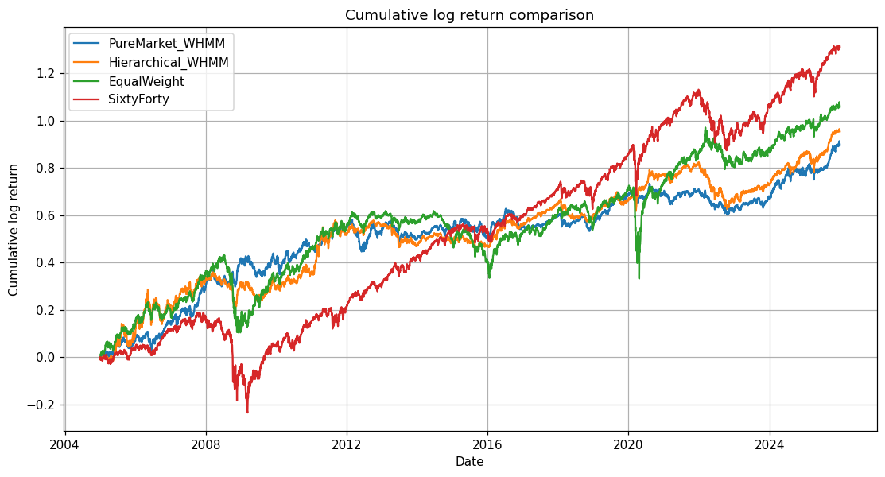
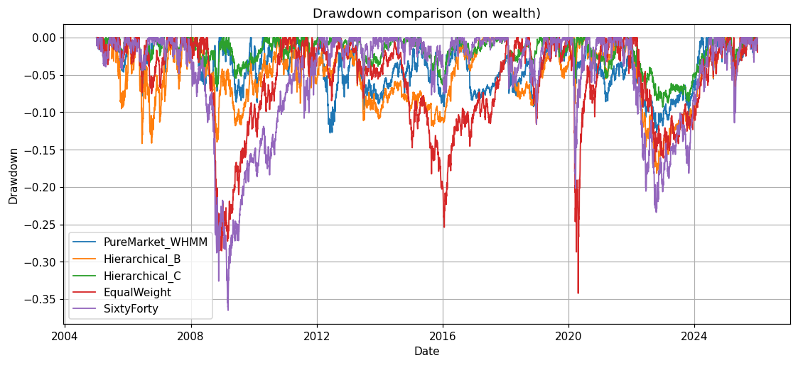
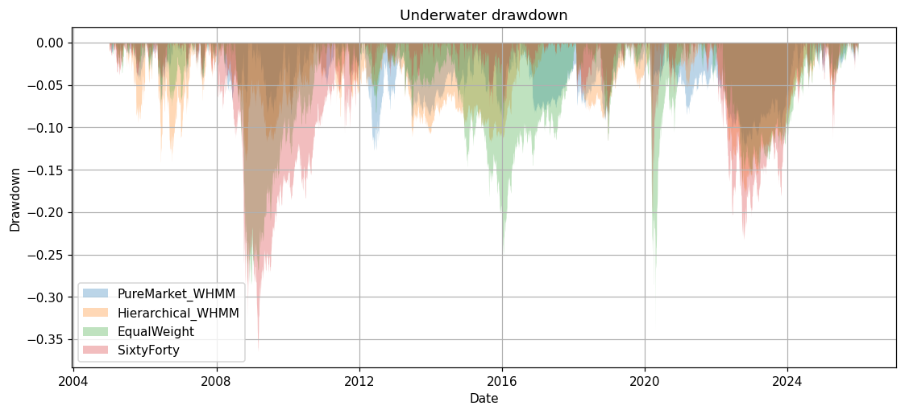
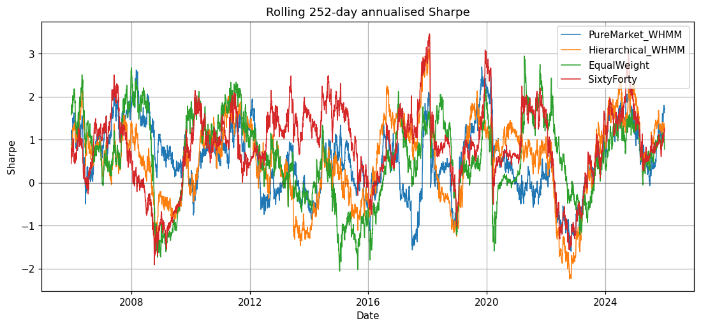
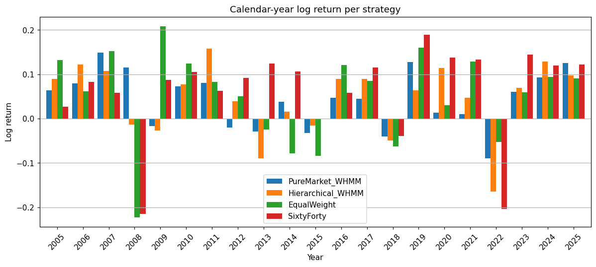
| Mean | Median | 95% Quantile | Days > 1% | Days > 5% | |
|---|---|---|---|---|---|
| PureMarket_WHMM | 0.0043 | 0.0000 | 0.0043 | 0.0290 | 0.0172 |
| Hierarchical_WHMM | 0.0037 | 0.0000 | 0.0091 | 0.0478 | 0.0153 |
| EqualWeight | 0.0000 | 0.0000 | 0.0000 | 0.0000 | 0.0000 |
| SixtyForty | 0.0000 | 0.0000 | 0.0000 | 0.0000 | 0.0000 |
| Average N_eff | Median N_eff | |
|---|---|---|
| PureMarket_WHMM | 2.7599 | 2.6563 |
| Hierarchical_WHMM | 2.4954 | 2.3422 |
| EqualWeight | 5.0000 | 5.0000 |
| SixtyForty | 1.9231 | 1.9231 |
| Average Weight | Weight Volatility | Time > 10% | Avg |dW| | |
|---|---|---|---|---|
| SPX | 0.2517 | 0.2034 | 0.7116 | 0.0027 |
| BOND | 0.3916 | 0.1721 | 0.9361 | 0.0014 |
| GOLD | 0.1926 | 0.1224 | 0.7492 | 0.0023 |
| OIL | 0.0446 | 0.0460 | 0.1588 | 0.0009 |
| USD | 0.1196 | 0.1272 | 0.4670 | 0.0014 |
| Average Weight | Weight Volatility | Time > 10% | Avg |dW| | |
|---|---|---|---|---|
| SPX | 0.2381 | 0.1461 | 0.7767 | 0.0014 |
| BOND | 0.4180 | 0.2250 | 0.7977 | 0.0015 |
| GOLD | 0.1574 | 0.1267 | 0.6261 | 0.0015 |
| OIL | 0.0632 | 0.1097 | 0.2629 | 0.0017 |
| USD | 0.1233 | 0.1893 | 0.2156 | 0.0013 |
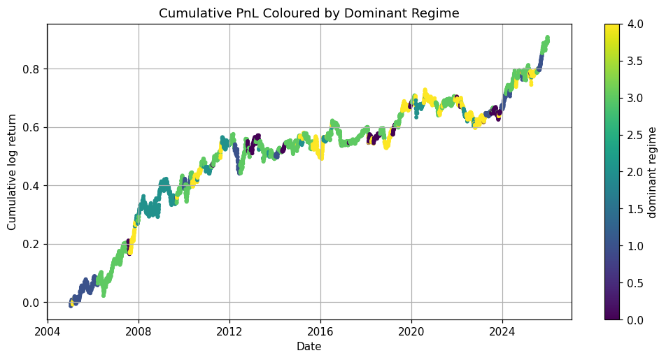
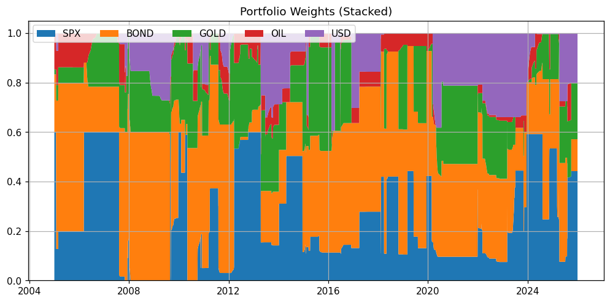
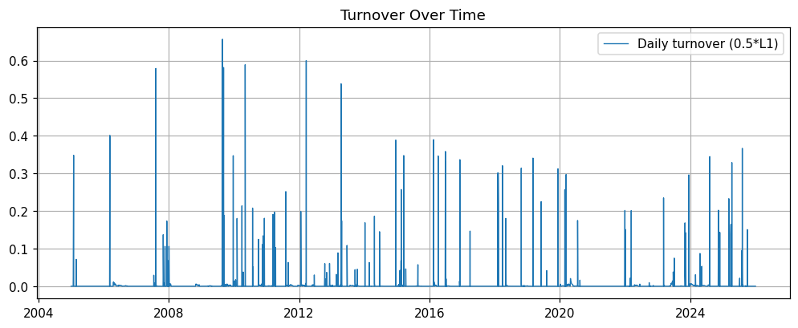
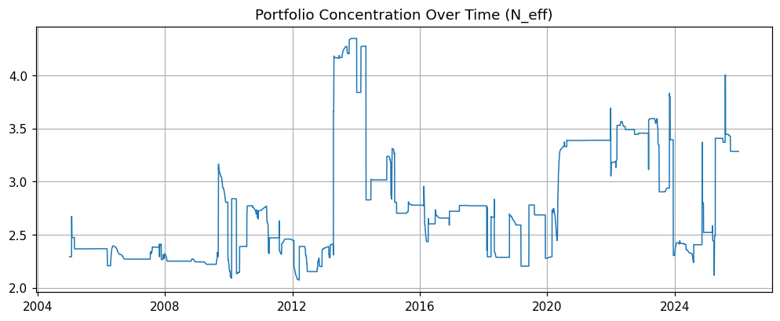
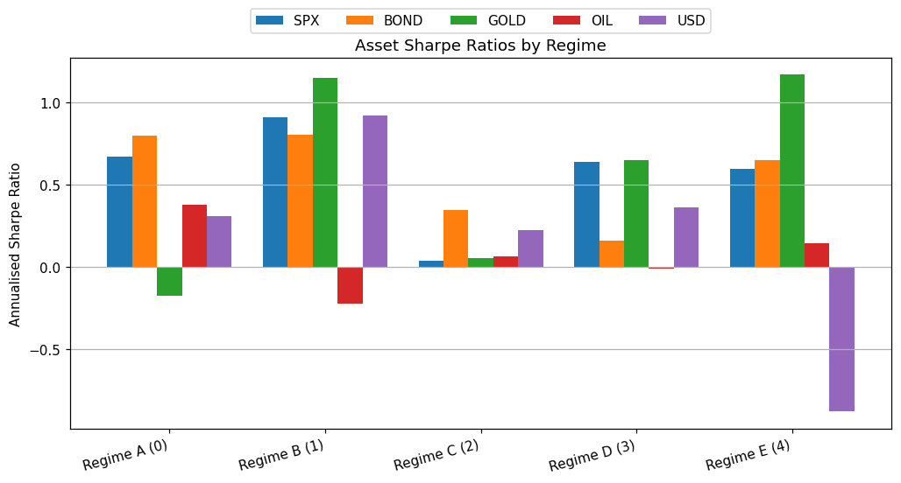
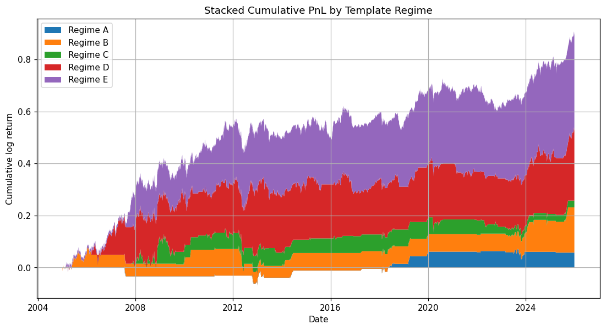
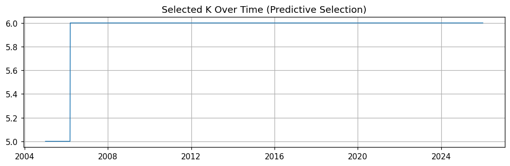
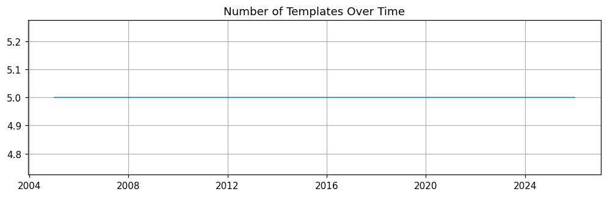
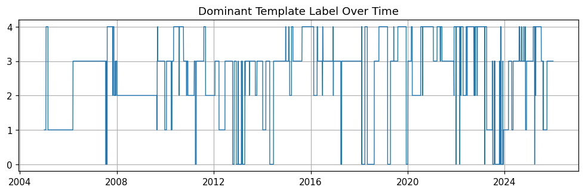
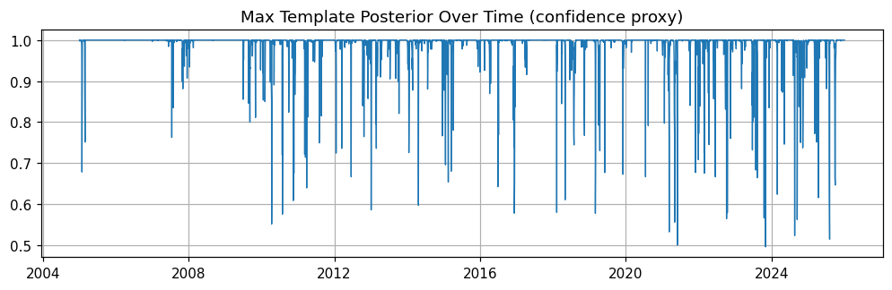
| Days | Frac of Sample | Ann Mean | Ann Vol | Sharpe | Hit Rate | Max DD (within) | |
|---|---|---|---|---|---|---|---|
| regime | |||||||
| 0 | 435 | 0.0794 | 0.0332 | 0.0643 | 0.5159 | 0.5724 | -0.0736 |
| 1 | 597 | 0.1090 | 0.0734 | 0.0693 | 1.0596 | 0.5427 | -0.0958 |
| 2 | 858 | 0.1566 | 0.0077 | 0.0828 | 0.0927 | 0.5268 | -0.1088 |
| 3 | 2415 | 0.4409 | 0.0277 | 0.0725 | 0.3823 | 0.5420 | -0.1109 |
| 4 | 1173 | 0.2141 | 0.0792 | 0.0696 | 1.1375 | 0.5405 | -0.0866 |
| Ann Mean | Ann Mean.1 | Ann Mean.2 | Ann Mean.3 | Ann Mean.4 | Ann Vol | Ann Vol.1 | Ann Vol.2 | Ann Vol.3 | Ann Vol.4 | Sharpe | Sharpe.1 | Sharpe.2 | Sharpe.3 | Sharpe.4 | |
|---|---|---|---|---|---|---|---|---|---|---|---|---|---|---|---|
| asset | BOND | GOLD | OIL | SPX | USD | BOND | GOLD | OIL | SPX | USD | BOND | GOLD | OIL | SPX | USD |
| regime | NaN | NaN | NaN | NaN | NaN | NaN | NaN | NaN | NaN | NaN | NaN | NaN | NaN | NaN | NaN |
| 0 | 0.04975596818253554 | -0.02061107315386562 | 0.09443114035614424 | 0.08237555232178781 | 0.015214312480192036 | 0.06226314868753599 | 0.11993186723769979 | 0.2505377266033471 | 0.12230681318551058 | 0.04866095301531944 | 0.7991238675100257 | -0.17185651844322045 | 0.37691385499656993 | 0.6735156462366781 | 0.31265956660162963 |
| 1 | 0.04932955069899799 | 0.16526263879021813 | -0.06390153709544687 | 0.10067228642079575 | 0.052703056232327634 | 0.061355086610118625 | 0.14390047386299842 | 0.2868017334724269 | 0.11027513005304004 | 0.057031531918856154 | 0.8040009952632454 | 1.1484509699916468 | -0.22280736005938528 | 0.9129192264146457 | 0.9241038151896915 |
| 2 | 0.0370073408167537 | 0.01355411515760855 | 0.04619333220703426 | 0.013105040748045822 | 0.0211426047441667 | 0.10682999657852661 | 0.23567469889169942 | 0.7223711839623693 | 0.33470763821493904 | 0.09314322077381025 | 0.34641338577176717 | 0.05751196552429724 | 0.06394680910948494 | 0.0391536949020272 | 0.22699026905575417 |
| 3 | 0.01008859885483615 | 0.10566487166511478 | -0.002772694976837048 | 0.07665356343972385 | 0.020994450616385607 | 0.06222443561402513 | 0.16261325387263395 | 0.28558657209377175 | 0.12009798617187037 | 0.05813262569363516 | 0.16213242844684353 | 0.6497924932236845 | -0.00970877221750692 | 0.6382585244187702 | 0.361147468669805 |
| 4 | 0.051240074886093855 | 0.18744133889387454 | 0.05928006104951996 | 0.12277235816746265 | -0.055510633338657606 | 0.07879427872335604 | 0.16030882945841524 | 0.4125361687186547 | 0.20618598666494367 | 0.06324729898368536 | 0.6503019726342819 | 1.169251497419845 | 0.14369663933624288 | 0.5954447251886724 | -0.8776759518691315 |
| 0 | 1 | 2 | 3 | 4 | |
|---|---|---|---|---|---|
| from | |||||
| 0 | 0.9448 | 0.0023 | 0.0000 | 0.0345 | 0.0184 |
| 1 | 0.0000 | 0.9782 | 0.0000 | 0.0201 | 0.0017 |
| 2 | 0.0000 | 0.0012 | 0.9709 | 0.0105 | 0.0175 |
| 3 | 0.0058 | 0.0029 | 0.0041 | 0.9793 | 0.0079 |
| 4 | 0.0085 | 0.0026 | 0.0128 | 0.0128 | 0.9633 |
| n_spells | mean_length | median_length | max_length | |
|---|---|---|---|---|
| regime | ||||
| 0 | 24 | 18.1250 | 13.5000 | 75 |
| 1 | 13 | 45.9231 | 20.0000 | 269 |
| 2 | 25 | 34.3200 | 5.0000 | 428 |
| 3 | 51 | 47.3529 | 35.0000 | 352 |
| 4 | 43 | 27.2791 | 14.0000 | 126 |
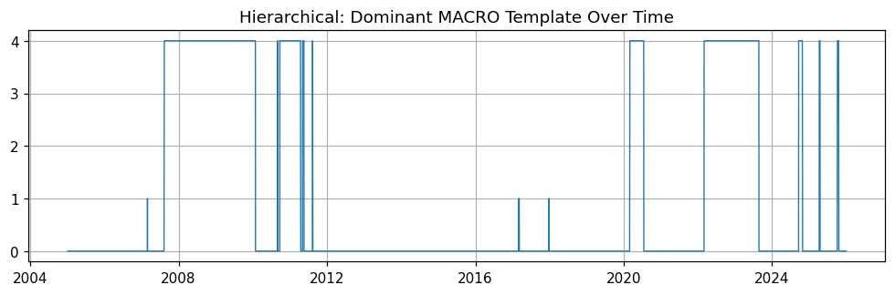
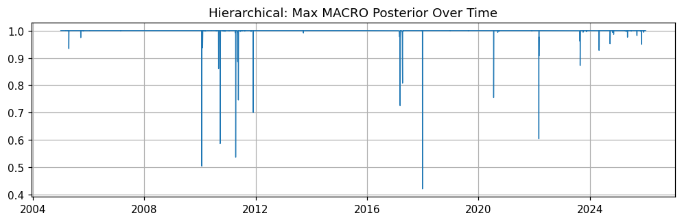
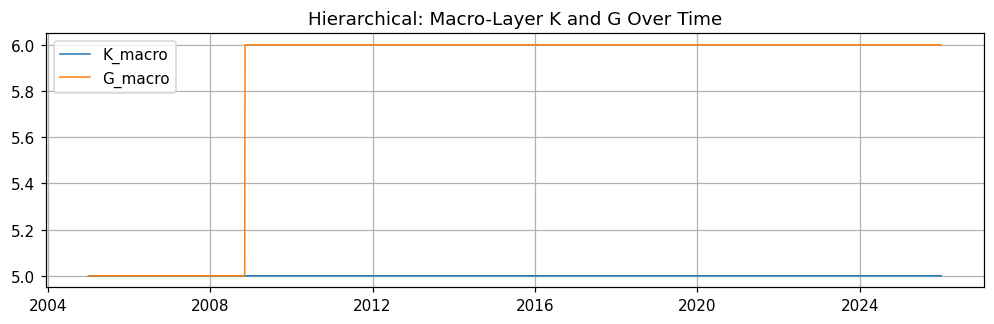
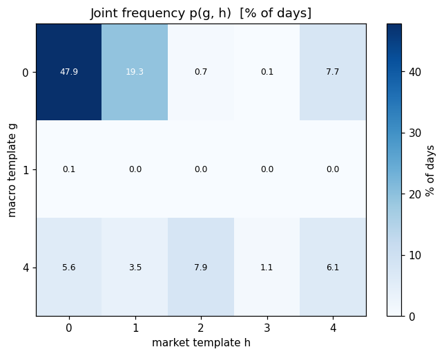
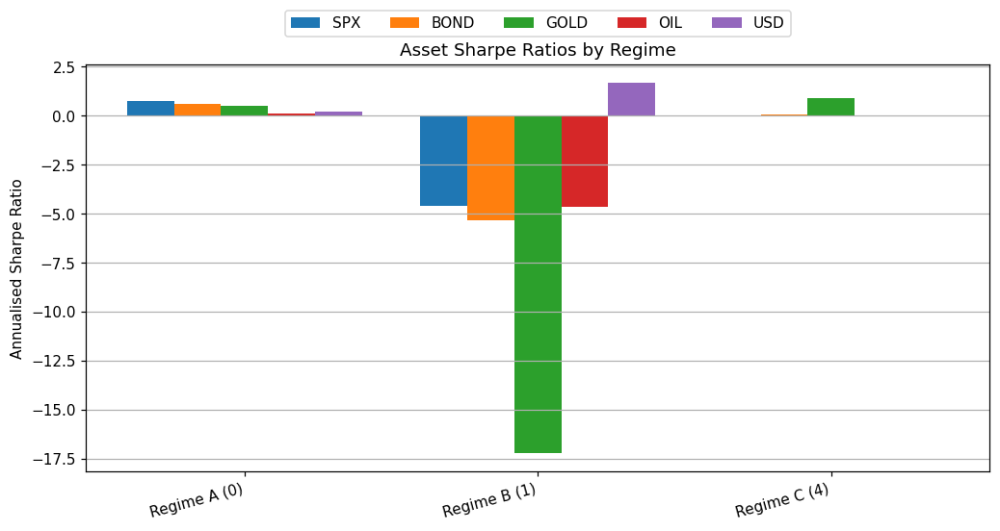
| Days | Frac of Sample | Ann Mean | Ann Vol | Sharpe | Hit Rate | Max DD (within) | |
|---|---|---|---|---|---|---|---|
| regime | |||||||
| 0 | 4143 | 0.7563 | 0.0430 | 0.0749 | 0.5747 | 0.5448 | -0.1418 |
| 1 | 7 | 0.0013 | -0.3837 | 0.0390 | -9.8315 | 0.2857 | -0.0114 |
| 4 | 1328 | 0.2424 | 0.0474 | 0.0905 | 0.5240 | 0.5361 | -0.1572 |
| Ann Mean | Ann Mean.1 | Ann Mean.2 | Ann Mean.3 | Ann Mean.4 | Ann Vol | Ann Vol.1 | Ann Vol.2 | Ann Vol.3 | Ann Vol.4 | Sharpe | Sharpe.1 | Sharpe.2 | Sharpe.3 | Sharpe.4 | |
|---|---|---|---|---|---|---|---|---|---|---|---|---|---|---|---|
| asset | BOND | GOLD | OIL | SPX | USD | BOND | GOLD | OIL | SPX | USD | BOND | GOLD | OIL | SPX | USD |
| regime | NaN | NaN | NaN | NaN | NaN | NaN | NaN | NaN | NaN | NaN | NaN | NaN | NaN | NaN | NaN |
| 0 | 0.03916799817515633 | 0.08129280748549907 | 0.02879936808995792 | 0.10759640858224528 | 0.011175582663175136 | 0.06294504638521142 | 0.1577292338933602 | 0.3060848421403912 | 0.14257655653460446 | 0.05739045839395288 | 0.6222570388693627 | 0.5153946765534959 | 0.09408949456160454 | 0.7546570852700514 | 0.19472893188029816 |
| 1 | -0.23388072169462149 | -1.6086984534199154 | -1.3513443420213544 | -0.2708753613247481 | 0.05981777593022386 | 0.043914589176312184 | 0.09356727255460626 | 0.29123605192076785 | 0.05890047993355738 | 0.03537412502005737 | -5.325809169149151 | -17.19296084516167 | -4.64003111259383 | -4.598865096350806 | 1.6910036897395135 |
| 4 | 0.005029073068890435 | 0.18888520534362996 | -0.0033544509924279906 | -0.005697753143513663 | -0.0036967113724714795 | 0.10237711702083829 | 0.20726353962725566 | 0.632711056518069 | 0.28809943482363787 | 0.08515407231899003 | 0.04912301904210485 | 0.9113286672770453 | -0.005301710722250029 | -0.019777036865766793 | -0.04341203270494774 |
| 0 | 1 | 4 | |
|---|---|---|---|
| from | |||
| 0 | 0.9969 | 0.0007 | 0.0024 |
| 1 | 0.4286 | 0.5714 | 0.0000 |
| 4 | 0.0075 | 0.0000 | 0.9925 |
| n_spells | mean_length | median_length | max_length | |
|---|---|---|---|---|
| regime | ||||
| 0 | 14 | 295.9286 | 138.5000 | 1448 |
| 1 | 3 | 2.3333 | 1.0000 | 5 |
| 4 | 10 | 132.8000 | 18.5000 | 642 |
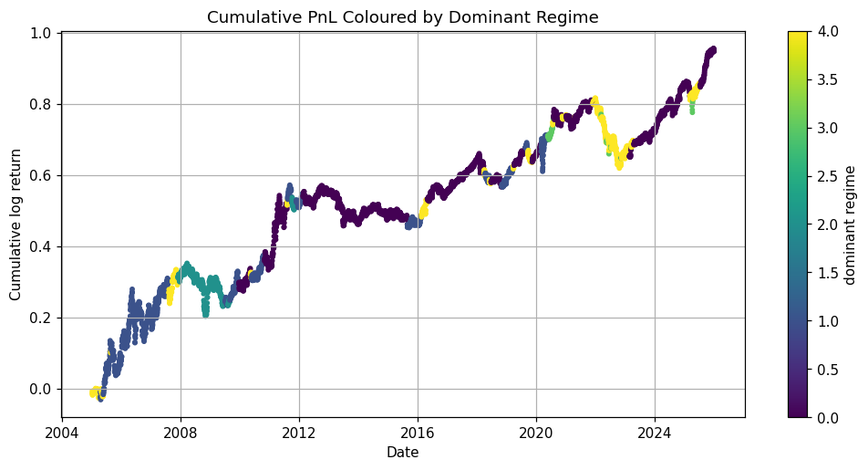
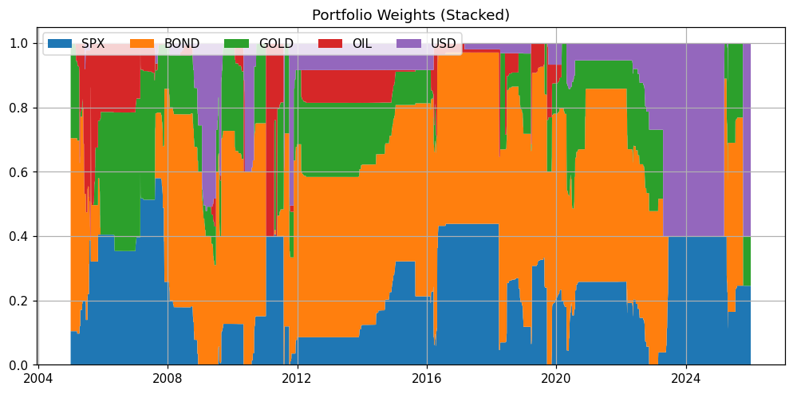
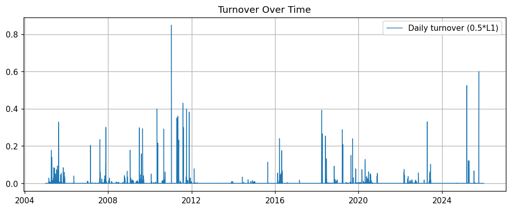
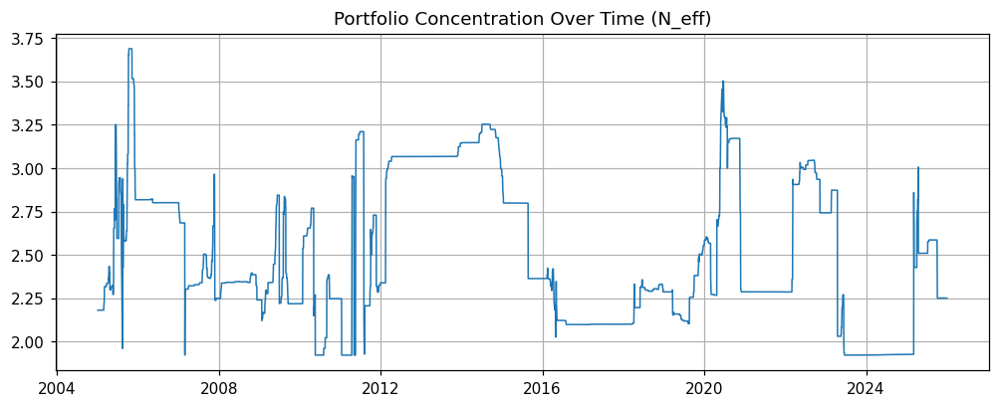
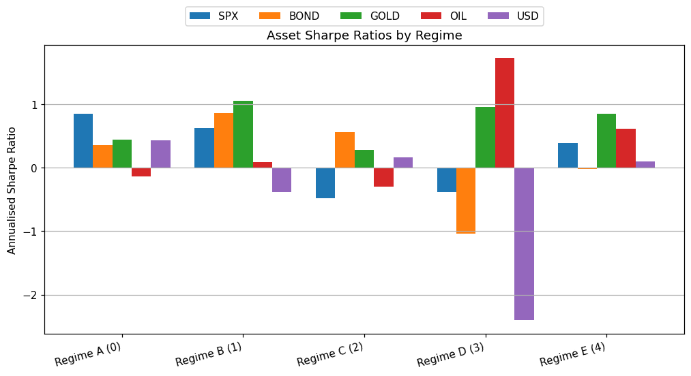
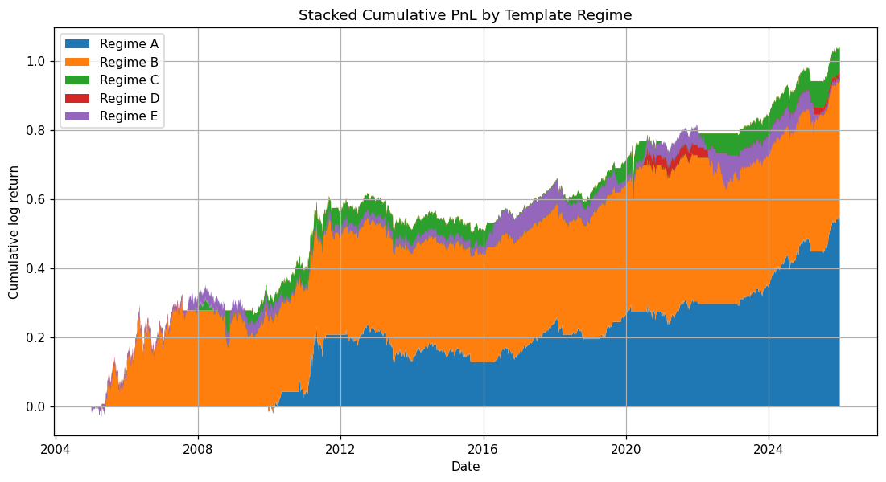
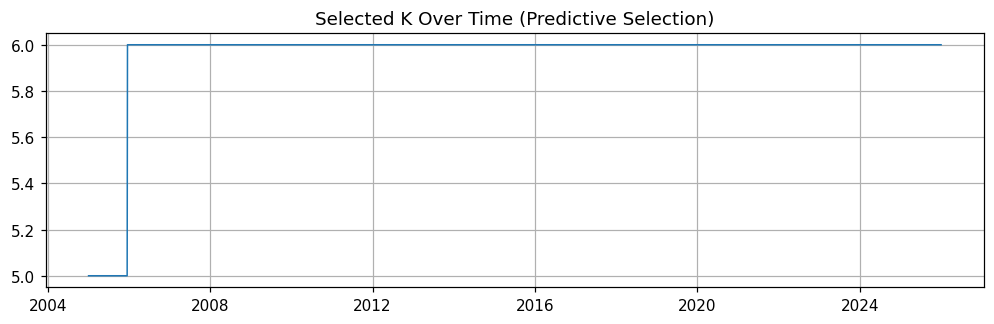
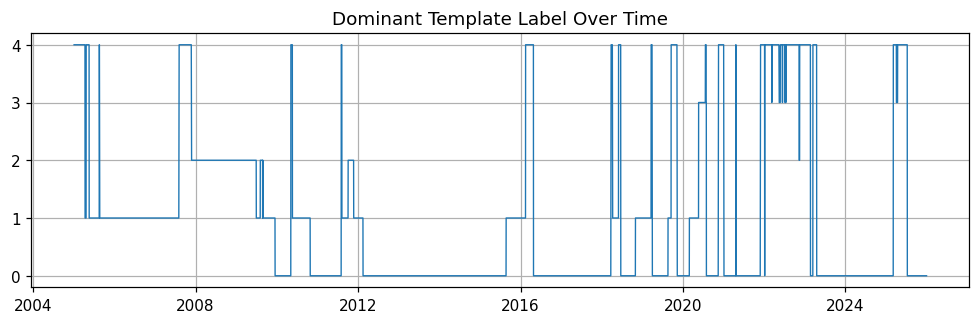
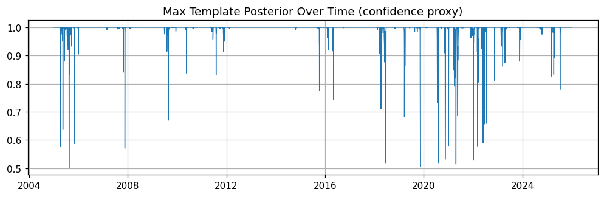
| Days | Frac of Sample | Ann Mean | Ann Vol | Sharpe | Hit Rate | Max DD (within) | |
|---|---|---|---|---|---|---|---|
| regime | |||||||
| 0 | 2937 | 0.5361 | 0.0464 | 0.0636 | 0.7287 | 0.5485 | -0.1094 |
| 1 | 1246 | 0.2275 | 0.0998 | 0.1039 | 0.9604 | 0.5530 | -0.1418 |
| 2 | 471 | 0.0860 | -0.0405 | 0.0795 | -0.5096 | 0.4989 | -0.1399 |
| 3 | 68 | 0.0124 | -0.0793 | 0.0734 | -1.0800 | 0.6176 | -0.0622 |
| 4 | 756 | 0.1380 | 0.0033 | 0.0846 | 0.0395 | 0.5212 | -0.1740 |
| 0 | 1 | 2 | 3 | 4 | |
|---|---|---|---|---|---|
| from | |||||
| 0 | 0.9956 | 0.0014 | 0.0000 | 0.0000 | 0.0031 |
| 1 | 0.0024 | 0.9888 | 0.0024 | 0.0008 | 0.0056 |
| 2 | 0.0000 | 0.0085 | 0.9894 | 0.0000 | 0.0021 |
| 3 | 0.0147 | 0.0000 | 0.0000 | 0.8676 | 0.1176 |
| 4 | 0.0132 | 0.0079 | 0.0026 | 0.0106 | 0.9656 |
| Start | End | Days | Total log ret | Ann Sharpe | Max DD | ||
|---|---|---|---|---|---|---|---|
| Crisis | Strategy | ||||||
| GFC_2008 | PureMarket_WHMM | 2008-01-01 | 2009-06-30 | 391 | 0.0613 | 0.4030 | -0.0863 |
| Hierarchical_WHMM | 2008-01-01 | 2009-06-30 | 391 | -0.0754 | -0.5836 | -0.1399 | |
| EqualWeight | 2008-01-01 | 2009-06-30 | 391 | -0.1029 | -0.4431 | -0.2854 | |
| SixtyForty | 2008-01-01 | 2009-06-30 | 391 | -0.2396 | -0.7085 | -0.3541 | |
| Euro_2011 | PureMarket_WHMM | 2011-06-01 | 2012-06-30 | 283 | -0.0365 | -0.3660 | -0.1277 |
| Hierarchical_WHMM | 2011-06-01 | 2012-06-30 | 283 | 0.0153 | 0.1725 | -0.0674 | |
| EqualWeight | 2011-06-01 | 2012-06-30 | 283 | 0.0115 | 0.1198 | -0.0845 | |
| SixtyForty | 2011-06-01 | 2012-06-30 | 283 | 0.0691 | 0.5287 | -0.0859 | |
| Taper_2013 | PureMarket_WHMM | 2013-04-01 | 2013-12-31 | 197 | -0.0776 | -1.2323 | -0.0870 |
| Hierarchical_WHMM | 2013-04-01 | 2013-12-31 | 197 | -0.0868 | -1.4456 | -0.0893 | |
| EqualWeight | 2013-04-01 | 2013-12-31 | 197 | -0.0373 | -0.6361 | -0.0703 | |
| SixtyForty | 2013-04-01 | 2013-12-31 | 197 | 0.0675 | 1.2131 | -0.0555 | |
| China_2015 | PureMarket_WHMM | 2015-06-01 | 2016-02-29 | 196 | -0.0018 | -0.0322 | -0.0743 |
| Hierarchical_WHMM | 2015-06-01 | 2016-02-29 | 196 | 0.0058 | 0.1532 | -0.0393 | |
| EqualWeight | 2015-06-01 | 2016-02-29 | 196 | -0.1062 | -1.2553 | -0.1850 | |
| SixtyForty | 2015-06-01 | 2016-02-29 | 196 | -0.0330 | -0.4337 | -0.0667 | |
| Q4_2018 | PureMarket_WHMM | 2018-09-01 | 2019-01-31 | 109 | -0.0112 | -0.4745 | -0.0665 |
| Hierarchical_WHMM | 2018-09-01 | 2019-01-31 | 109 | 0.0119 | 0.6445 | -0.0341 | |
| EqualWeight | 2018-09-01 | 2019-01-31 | 109 | -0.0292 | -0.8037 | -0.1161 | |
| SixtyForty | 2018-09-01 | 2019-01-31 | 109 | -0.0286 | -0.5819 | -0.1145 | |
| Covid_2020 | PureMarket_WHMM | 2020-02-01 | 2020-06-30 | 107 | -0.0072 | -0.1816 | -0.0730 |
| Hierarchical_WHMM | 2020-02-01 | 2020-06-30 | 107 | 0.0493 | 1.0728 | -0.0886 | |
| EqualWeight | 2020-02-01 | 2020-06-30 | 107 | -0.0305 | -0.1826 | -0.3373 | |
| SixtyForty | 2020-02-01 | 2020-06-30 | 107 | 0.0162 | 0.1366 | -0.2016 | |
| Rates_2022 | PureMarket_WHMM | 2022-01-01 | 2022-12-31 | 260 | -0.0896 | -1.2586 | -0.0994 |
| Hierarchical_WHMM | 2022-01-01 | 2022-12-31 | 260 | -0.1646 | -1.8660 | -0.1746 | |
| EqualWeight | 2022-01-01 | 2022-12-31 | 260 | -0.0523 | -0.4097 | -0.1660 | |
| SixtyForty | 2022-01-01 | 2022-12-31 | 260 | -0.2042 | -1.2773 | -0.2304 | |
| Liberation_2025 | PureMarket_WHMM | 2025-01-01 | 2025-09-30 | 195 | 0.0870 | 1.4848 | -0.0657 |
| Hierarchical_WHMM | 2025-01-01 | 2025-09-30 | 195 | 0.0683 | 1.0824 | -0.0848 | |
| EqualWeight | 2025-01-01 | 2025-09-30 | 195 | 0.0825 | 1.1538 | -0.0718 | |
| SixtyForty | 2025-01-01 | 2025-09-30 | 195 | 0.1041 | 1.1183 | -0.1104 |
This work faithfully replicates Boukardagha (2026) on a 21-year OOS window (Jan 2005 - Dec 2025), and adds a hierarchical macro layer following Fine, Singer & Tishby (1998).
Deviations from Boukardagha (2026):
Efficiency: daily refits are warm-started from the previous day's fitted parameters, exploiting EM's monotonicity to land on the same likelihood-surface basin in 3–10 iterations rather than starting cold from random initialisation. This is purely a wall-time optimisation; the converged maximum is identical.